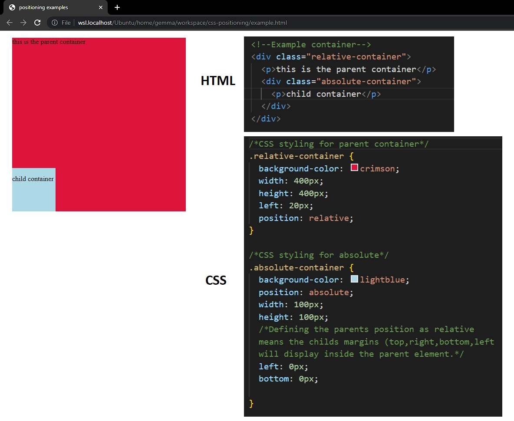
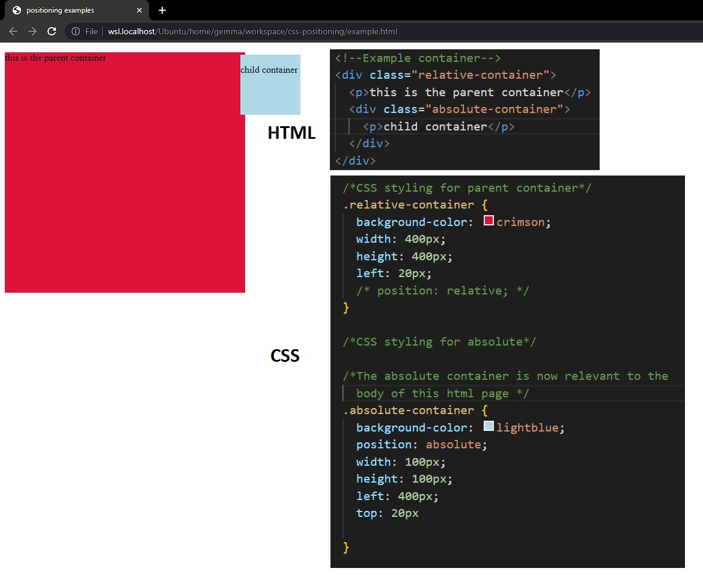
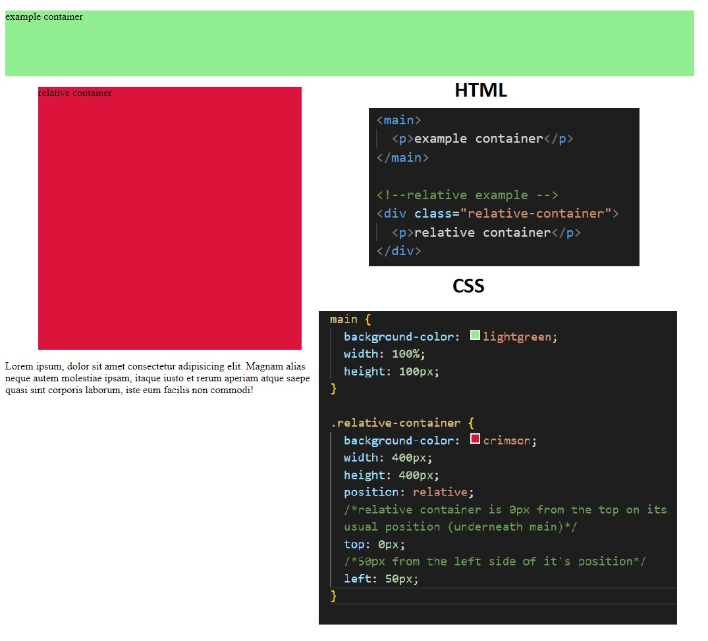
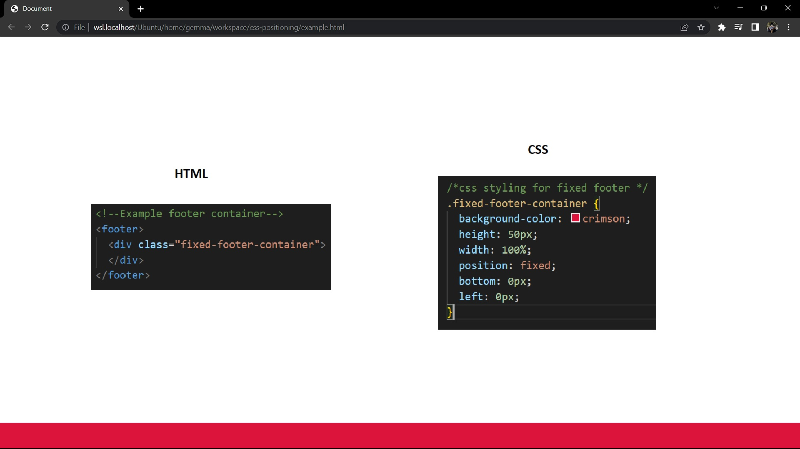

The use of CSS positioning allows you to position HTML elements on your webpage. Although confusing at first, once understanding these positioning types you can easily move elements around your webpage and create functional websites.
Using absolute positioning allows you to position an HTML element relative to its closest positioned element. The most common use case is for positioning elements inside another element . If there is no previously positioned element the absolute element will position itself against the viewpoint of your webpage. The example below includes two div containers, a parent and a child. The first screenshot displays the childs position when the parent container has a position defined as relative).
The second screen shows the child containers position relative to the body of the webpage since no previous elements position has been defined.
Positioning an element as relative will move the element to its usual position on your webpage. This then allows you to move the element using top, left, right and bottom. This example shows a main container (green) with another container (red) underneath positioned as relative. The red container can be moved freely anywhere underneath the green container.
A fixed element will always stay in the same position on the webpage even if the page is scrolled. An example of using the fixed position might be for a footer of a website. The below code and webpage shows a footer fixed to the bottom of the webpage. The bottom and left margins have a margin of 0px and since the elements position is defined as fixed the footer is stuck to the bottom of our webpage.
CSS positioning is an essential tool for designing web pages as it allows you to move elements around your webpage. An easy way to understand each of these positions is to create some square div containers and use the positioning tool to move the containers around on your webpage.